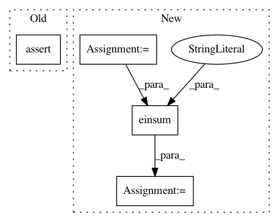

2a11d3f0bad2430b81628fa6cb0a6301d099d77d,performer/fast_attention/tensorflow/fast_attention_test.py,TransformerLayersTest,test_softmax_noncausal_attention_block_output,#TransformerLayersTest#,53
Before Change
num_random_features, dim)
attention_block_output = fast_attention.favor_attention(
query, key, value, kernel_transformation, False, projection_matrix)
self.assertListEqual(attention_block_output.get_shape().as_list(),
[batch_size, length, num_heads, dim])
def test_fast_attention(self):
hidden_size = 64
num_heads = 4
After Change
attention_block_output = fast_attention.favor_attention(
query, key, value, kernel_transformation, False, projection_matrix)
query = tf.multiply(query, 1.0 / math.sqrt(float(dim)))
attention_scores = tf.einsum("BXHD,BYHD->BXYH", query, key)
attention_scores = tf.nn.softmax(attention_scores, axis=2)
exact_attention_block_output = tf.einsum("BXYH,BYHD->BXHD",
attention_scores, value)
max_error = 2.0
error = tf.math.abs(
(exact_attention_block_output - attention_block_output) /
exact_attention_block_output)
In pattern: SUPERPATTERN
Frequency: 4
Non-data size: 4
Instances
Project Name: google-research/google-research
Commit Name: 2a11d3f0bad2430b81628fa6cb0a6301d099d77d
Time: 2020-12-11
Author: xingyousong@google.com
File Name: performer/fast_attention/tensorflow/fast_attention_test.py
Class Name: TransformerLayersTest
Method Name: test_softmax_noncausal_attention_block_output
Project Name: geomstats/geomstats
Commit Name: e4eaec6cbd34c7abc59fcf29a95dab3c9f2810b8
Time: 2018-09-12
Author: ninamio78@gmail.com
File Name: geomstats/riemannian_metric.py
Class Name: RiemannianMetric
Method Name: variance
Project Name: mariogeiger/se3cnn
Commit Name: e1a5c04a625f563b9b2c761c9c3a4e1a7963a21f
Time: 2019-07-11
Author: geiger.mario@gmail.com
File Name: se3cnn/SO3.py
Class Name:
Method Name: basis_transformation_Q
Project Name: geomstats/geomstats
Commit Name: 57b3d54234cda1decf80764f856ab255b8d13c1d
Time: 2018-09-14
Author: ninamio78@gmail.com
File Name: geomstats/riemannian_metric.py
Class Name: RiemannianMetric
Method Name: variance